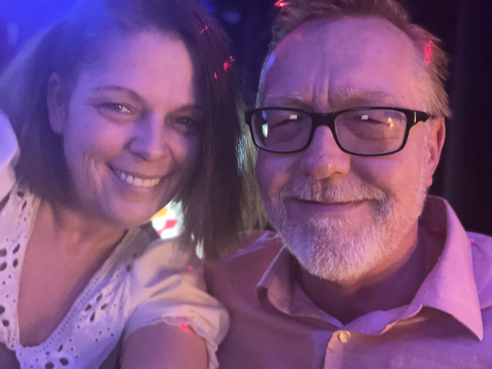
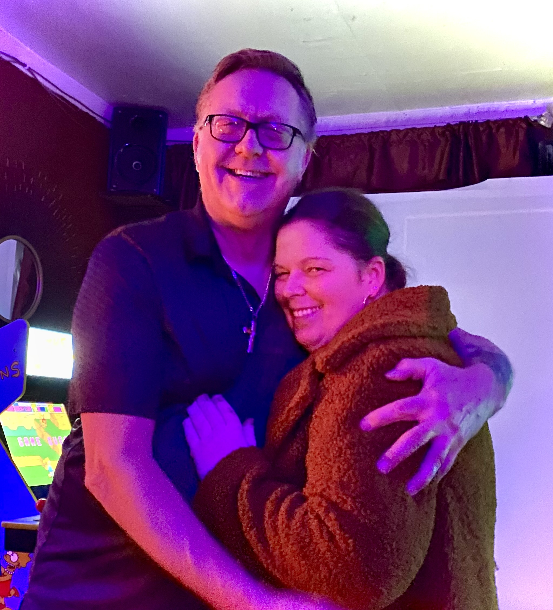

Freedom of Speech
On the subject of freedom of speech, We see it as a cornerstone of democracy. While we may not necessarily
embrace diverse
perspectives, we do acknowledge the importance of considering them. Holding firm to our beliefs, we recognize
that open and
respectful dialogue is crucial for societal progress. This unwavering commitment to our convictions is a key
factor in
shaping our worldview.

Christianity
Our faith in Christianity is the bedrock of our lives, and our convictions to Jesus Christ run deep. He is our
guiding light,
providing strength, purpose, and unwavering support in every aspect of our journey. Through prayer, reflection,
and a
steadfast commitment to living according to Christian principles, I find solace and meaning. This relationship
with
Jesus shapes not only our spiritual beliefs but also influences the way we navigate life's challenges with
compassion,
forgiveness, and a profound sense of purpose.
Israel
Turning to our unwavering support for Israel, it's rooted in a recognition of its historical ties and the
contemporary
challenges it faces. The Bible states Jewish people are God's chosen people, and acknowledging their
significance in history
deepens my commitment to supporting Israel. Despite the region's complexities, standing behind Israel aligns
with our
dedication to promoting stability and understanding. This commitment, rooted in faith, shapes not only my
worldview but
also influences the way we engage with global issues.
Hobbies
Rick and Crystal share a passion for retro gaming, particularly enjoying the classic vibes of Arcade 1up and
AtGames arcade
games. Our love for movies adds another layer of joy to our leisure time, creating cozy moments together. The
family
extends to our fur companions – a spirited Doberman Pincher named Jasmine, a dynamic Blue Heeler/Border Collie
mix named
Buttons, and the sweet rescue cat, Kitty. Our home is adorned with Rick's intricate train sets, reflecting his
collector's spirit, while my Crystals penchant lies in amassing a vibrant collection of Barbies. These shared
interests weave
a tapestry of joy and nostalgia in our lives
